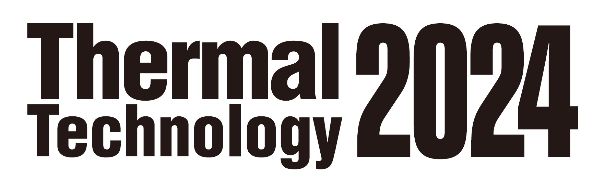

出展いたしました、ご来場ありがとうございました

①2024年10月10日〜11日まで大阪梅田のグランフロント北館において
「サーマルテクノロジー2024 第5回工業炉・関連機器展&シンポジウム」が開催され、当社は本展示会に出展し、多目的窒化炉や水素バーナを中心としたカーボンニュートラルに貢献する製品群を転じました。
②「サーマルテクノロジー2024」展示会当日、実会場で展示された仕様や製品・技術発表会での資料をご希望される方は、こちらのアンケートにご回答ください。
③展示パネル資料はこちらからダウンロードください
④製品・技術発表会資料はこちらからダウンロードください
★ご来場の際には事前にこちらのページにて招待状入手の上ご来場ください。